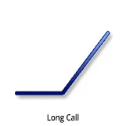
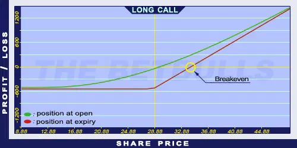

Description and use

Long Call is the purchase of a call option. This position grants the right to the option holder to buy an underlying security at an agreed-upon price until a specific future date. When opening this position, the option holder expects the price of the underlying to increase. It should be applied when the market is intensively increasing. The best is to buy cheap options, because the market can reach the strike price in a strong trend. One should think in long-term, in 3 months at least.
- Type: Bullish
- Transaction type: Debit
- Maximum profit: Unlimited
- Maximum loss: Limited
- Strategy: Basic strategy
Opening the Position
Buy a Call option with a strike price lower than the current market price of the underlying security.
Steps
Entry:
- Is the market trend actually increasing after the option purchase?
Exit:
- To avoid the time decay effect, the Long option should be sold at least one month before the expiry date.
- If the underlying’s price falls below the Stop Loss level, the position should be closed by selling the Call option. Stop Loss is a strategy to avoid losses: the investor decides the maximum loss he would finance and at what point the opposite transaction should take place.
Basic Characteristics
- Maximum loss: Limited. The lost amount cannot be bigger than the premium paid.
- Maximum profit: Increasing as the market rises. It might even be unlimited.
- Time decay: Time decay has a negative effect on the Long Call. The closer the option to expiration the more it loses from its value. This process accelerates over time. An increase in the underlying securities volatility can slow it down, and a decrease can make it faster.
- Breakeven point: Strike price + premium.
Advantages and Disadvantages
Advantages:
- Long Call costs less than buying the share immediately.
- The potential profit is unlimited in theory, and the potential loss is limited.
Disadvantages:
- An incorrectly chosen strike price, expiration, or underlying security can result in a potential loss of 100% of the investment.
Closing the Position
Sell the option.
Mitigation of Losses
Determine the value for the Stop Loss based on the underlying security.
Example

Long Call strategy example
- ABCD is traded for $28.88 on 19.02.2017. The investor buys a Long Call option which has a strike price of $27.50, expires in January 2018. and costs $4.38 (premium).
- Price of the underlying (share price): S= $28.88
- Premium (Call): C= $4.38
- Strike price: K= $27.50
- Debit: D
- Maximum loss: R
- Maximum profit: Pr
- Breakeven point: BEP
- Debit: D = $4.38
- Maximum loss (risk): R = $4.38
- Maximum profit: Unlimited
- Breakeven point: BEP = $31.88